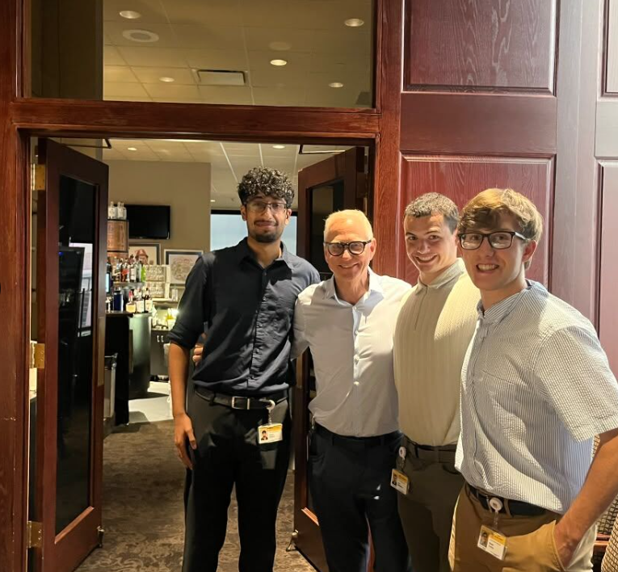

| Scrums and Meetings | Coding Languages and Frameworks | Artificial Intelligence Usage |
|---|---|---|
| I participated in daily meetings called scrums where participants would give an outline of their day. | I gained more knowledge of HTML and JavaScript elements and learned about Angular and AngularJS, two coding Frameworks for hosting websites. One specific HTML item I learned about was making tables, such as this one. | I learned how AI is used in a company setting - it has to be monitored greatly in usage as it still makes many mistakes |
I got the chance to network with many different individuals at Union Pacific, including other software engineering interns and prominent figures at the company such as CIO Rahul Jalali. I got to learn about their backgrounds and knowledge of computing.
Why is this important? Click the dropdown below

Picture: Me and my coworkers standing for a picture at the Omaha Press Club. I am on the far right
Through performing challenging tasks I was able to improve my problem-solving skills. In addition, I was able to improve my debugging skills in a corporate environment - I learned from my coworkers how they go about tackling bugs or other issues they are having. Before these tasks, I really did not know how I would have completed them; however, through diagraming problems and thinking of out-of-the-box solutions I was able to complete given tasks.